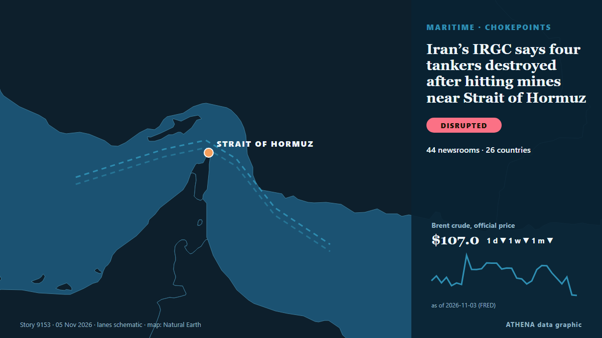

ATHENA Glaux Intelligence — Inteligencia informativa global — cada cifra explicada
Noticias del mundo, contrastadas entre países
ATHENA Glaux sigue cientos de medios de todo el mundo y agrupa sus informaciones en acontecimientos. De cada uno ve cuántos medios de cuántos países lo publicaron, quién fue el primero y una puntuación de riesgo con sus motivos — actualizado cada 30 minutos, en siete idiomas.
En directo de las noticiasTenerife Striker, Jesus de Miguel Dies After Collision In Match65 medios · 34 países · Riesgo 6.4 · Fuentes: CNA (Channel NewsAsia), Sydney Morning Herald

Comercio e industriaIran’s IRGC says four tankers destroyed after hitting mines near Strait of Hormuz
Coalition says it destroyed two ballistic missile launchers The Coalition has released footage it says shows the targeting and destruction of two ballistic missile launch platforms. de Gulf News
Los titulares se muestran en inglés, tal como se publicaron.
US Midterms: Democrats take control of US Congress as voters reject Trump’s Republicans
Democrats have taken control of both chambers of the United States Congress in the November 3, 2026, midterm elections, dealing a major political setback to President Donald Trump and his Republican… de Vanguard
Israel faces new era of sinking US support after election
LONDON: It is a measure of how much is at stake in Tuesday’s legislative election in Israel, and how finely balanced the outcome might be, that a record 22,000 police officers have been deployed in… de Arab News

Hoy en cifras
| 16:00 | 1079 |
|---|---|
| 17:00 | 568 |
| 18:00 | 854 |
| 19:00 | 635 |
| 20:00 | 964 |
| 21:00 | 451 |
| 22:00 | 489 |
| 23:00 | 463 |
| 00:00 | 479 |
| 01:00 | 512 |
| 02:00 | 400 |
| 03:00 | 543 |
| 04:00 | 515 |
| 05:00 | 368 |
| 06:00 | 0 |
| 07:00 | 0 |
| 08:00 | 0 |
| 09:00 | 170 |
| 10:00 | 586 |
| 11:00 | 591 |
| 12:00 | 414 |
| 13:00 | 741 |
| 14:00 | 1441 |
| 15:00 | 403 |
Riesgo de los eventos de hoy
The US$6.3 billion Binance hack is the biggest heist ever – it should be a wake up call for cryptocurrency users
An on-chain tally puts the suspected Binance drain at $5.57 billion across three blockchains, as Tether and Circle froze $1.8 billion. de Decrypt
UK PM Burnham says he is ‘open’ to formal apology for slavery, but rules out reparations
At least 12.5 million Africans were abducted and sold into slavery. de Express Tribune
Melania Trump meets with Russian and Ukrainian representatives at the White House
WASHINGTON: First Lady Melania Trump will host “representatives” of Russia and Ukraine in Washington, the White House said Tuesday, without specifying a date or offering further details about who may… de Business Recorder
Lo más cubierto
Señales emergentes
- Aumento repentino · Activa ahoraRTE
- Aumento repentino · Activa ahoraParaguay
- Aumento repentino · Activa ahoraMANILA
- Aumento repentino · Activa ahoraOval Office
- Aumento repentino · Activa ahoraNajib
Alertas oficiales
- Red notification for tropical cyclone FOUR-26. Population affected by Category 1 (120 km/h) wind speeds or higher is 1.156 million .Red · GDACS ·
- M 6.1 - Fiji regionM6.1 · USGS ·
- Cyber chief: UK facing AI-powered attacks on critical infrastructure within two yearsadvisory · UK National Cyber Security Centre ·
- M 6.0 - 165 km NW of Port-Olry, VanuatuM6.0 · USGS ·
ATHENA en Telegram
Únase gratis al grupo ATHENA Glaux y reciba las noticias en cuanto se publican aquí:
- eventos de última hora con riesgo de 6 o más
- un resumen cada hora de los principales eventos
- actualizaciones de los seguimientos de riesgo
- el informe diario cada mañana a las 10:00 (hora de Atenas)
- una perspectiva semanal
- avisos oficiales, señales emergentes y riesgos al alza
Pulse el botón, se abre Telegram, pulse Unirse. Las publicaciones están en inglés; puede silenciar o salir cuando quiera. ¿Sin Telegram? Es gratis en telegram.org.
Seguimiento de riesgos
Más ›Riesgos globales — semana 45, 2026 (2–8 nov) ›
Geopolítica, política y seguridad
Más ›- Elecciones y política
ANC gets 30% in South Africa’s election, partial results show
- Elecciones y política
Abdul El-Sayed did not have to become less Muslim to win
- Guerras y conflictos
Death toll from Russian strike on Komyshuvakha rises to 53 as search operation enters 5th day
- Diplomacia y cumbres
Trump designates Oval Office as national monument
Economía, finanzas y mercados
Más ›France Industrial Output (MoM) below forecasts (0.3%) in September: Actual (-0.5%)
- Inflación y tipos de interés
Interest rate hikes unlikely to be a repeat of 2022, says Bank’s chief economist
- Banca y crédito
Cyberattack Hits French Blood Bank Site but No Blood Products Are Compromised
- Acciones, bonos y mercados
Tech stocks suffer bloodbath as US midterms fuel AI fears
- Banca y crédito
West Bank: Palestinians harvest olives under Israeli military restrictions
Comercio, industria e infraestructuras
Más ›European skies on high alert as more airlines receive bomb threats – Europe live
Anonymous tip-off about explosives on Ryanair planes from Lisbon and Dublin prompted fighter jet escort; similar false alerts reported across Europe on Tuesday. de Wanted in Rome (working feed)
- Comercio y acuerdos
India vs Sri Lanka 1st ODI moved from Delhi to Visakhapatnam
- Aviación, tren y carretera
‘If the plane crashes, so be it’: New wave of bomb hoaxes hits dozens of flights
- Aviación, tren y carretera
Aer Lingus says pilot ‘acted impeccably’ on flight diverted by bomb threat amid France investigation
- Construcción e infraestructuras
Malaysia, Singapore raise taxi quota, add two operators
Energía, recursos y medio ambiente
Más ›2026 'most likely' to be second-hottest year on record: EU monitor
Paris, France: The world is on track for 2026 to be the second-hottest year on record as an exceptionally strong El Nino weather pattern turbocharges human-driven global warming, t... de Oman Observer
- Petróleo y gas
ADNOC signs LNG deal with Gujarat Energy to supply 4 million tonnes over 10 years
- Petróleo y gas
Turkey says gas pipeline project with Turkish Cypriots can provide power to whole island
- Clima y política climática
90 mil. displaced people at risk from climate threats, UN refugee agency says
- Petróleo y gas
Oil set for sharp weekly drop but Middle East supply concerns provide floor
Tecnología, IA y ciberseguridad
Más ›Activists breach Microsoft data centre site as protests spread in Europe
Campaigners said data centres pressure electricity and water supplies, compete with housing and other businesses for resources and threaten climate goals. de Free Malaysia Today
- Medios y desinformación
Staff at RTE campus evacuated after bomb threat
- Inteligencia artificial
3 Charged in Scheme to Use AI to Impersonate CEOs and Attorneys to Steal $129 Million
- Robótica y automatización
China blocks SoftBank's $5.4bn deal for ABB robotics division
- Chips y computación
US lawmakers request briefing with Nvidia's Jensen Huang on dealings with Megaspeed executive
Empresas, compañías e inversión
Más ›Grab to cut driver fees, cap deductions at 32pct in Vietnam
HANOI: Vietnam’s competition commission said on Thursday that ride-hailing firm Grab had agreed to cut some fees charged to passengers and drivers and compensate drivers affected by excessive… de New Straits Times
- Estrategia empresarial
Tesla is ‘winding down’ production of the Cybertruck next year
- Estrategia empresarial
Soaring fuel costs hit profit at British Airways owner IAG
- Sectores y riesgos
Dolly Parton's manager drops lawsuit against nephew
- Estrategia empresarial
Nintendo quarterly net profit drops as Switch 2 unit sales slow
Salud, ciencia e investigación
Más ›Child dies of measles in Wisconsin’s first such death since 1990
An infant in southwestern Wisconsin has died after contracting measles, the state's first death from the disease in 36 years, state officials announced Thursday. de Medical Xpress
- Investigación médica
Pope Leo starts South America ‘homecoming’ tour a month after lung surgery
- Descubrimientos científicos
China's space station sets new atomic cooling record
- Sistemas de salud
Unions call off 48-hour state hospital strike after draft pay deal
- Investigación médica
After cancer surgery, Pope Leo embarks on Latin America trip
Sociedad, derecho y políticas públicas
Más ›Harry and Meghan to make first public appearance since Thomas Markle allegations
The Metropolitan Police acknowledged receiving a letter in 2019 regarding accusations about Meghan Markle’s father but did not share this information with other law agencies. de Arab News
- Educación y formación
Bus whose passengers included kids crashes in France, leaving 2 dead and 16 injured
- Tribunales y justicia
Hong Kong activist Joshua Wong given another 10 years
- Accidentes y emergencias
EU investigating fraud in Spain's deadly crash rail line
- Crimen y corrupción
Malaysia ex-PM Najib Razak set for house arrest after party pays fine to
Deportes
Más ›Tinubu congratulates Flamingos on qualification for U-17 World Cup final
He urged the players to sustain their impressive form and remain committed to the task ahead as they pursue the ultimate prize. de Channels TV
- Juegos Olímpicos y más
Cricketer dubbed ‘Clicky Ponting’ suspended for 2 years
- Fútbol
Tuchel rewards England camp performers as Palmer misses out
- Fútbol
Cristiano Ronaldo brings his international football career to an end
- Juegos Olímpicos y más
McIlroy gets 2-shot penalty in first-round 70 in Abu Dhabi as Laporta leads with a 62
Cultura, personas y estilo de vida
Más ›Italian chef sacked for refusing to put pineapple on pizza, says it insulted his culture
An Italian chef in Australia has lost an unfair dismissal claim after being sacked for, among other workplace issues, refusing to serve ham and pineapple pizza, describing the topping as an insult to… de Vanguard
- Cine y televisión
“Godzilla Minus Zero” Brings King Ghidorah to Clash with the King of Monsters in Postwar Japan
- Cine y televisión
From Hollywood Stardom to a Rape Conviction: The Case of Actor Russell Brand
- Necrológicas
‘The Legend of Zelda: Ocarina of Time’ Drops for Nintendo Switch 2: Here’s Where to Shop the Remake Online
- Cine y televisión
India's 'Lord of the Rings': filmmakers hail 'Ramayana' epic